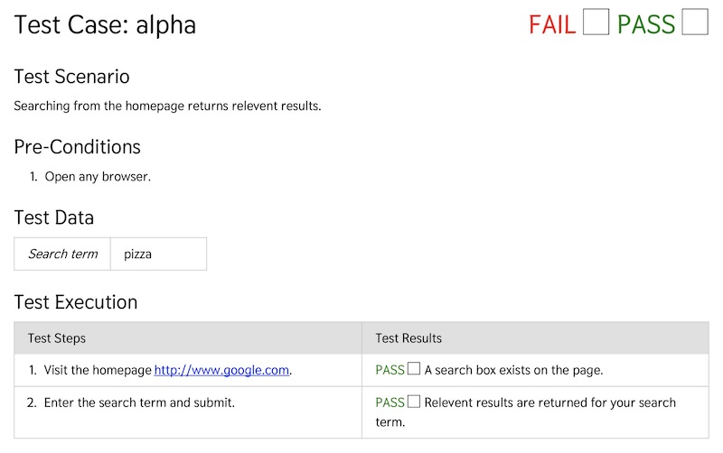

Manual test is a way to create QA testing for human running. It's for those situations where automated testing is forthcoming, would not be feasible. It's meant to be a very quick and simple way to have QA.
Visit https://aklump.github.io/manual_test for full documentation.
This one-liner will create a folder called tests_manual and install this library there using composer.
mkdir tests_manual && cd tests_manual && composer require aklump/manual-test && cp ./vendor/aklump/manual-test/examples/config.xml .
export TEST_BASE_URL=http://mysite.com; ./vendor/bin/generate --configuration=config.xmlexport SIMPLETEST_BASE_URL=http://mysite.com; ./vendor/bin/generate --configuration=coanfig.xmlIf you find this project useful... please consider making a donation.